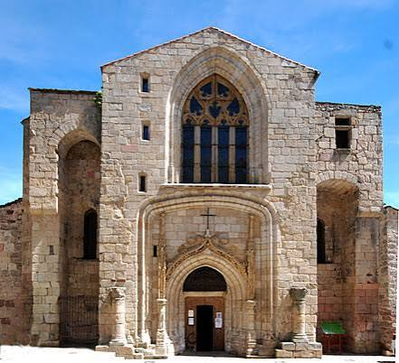
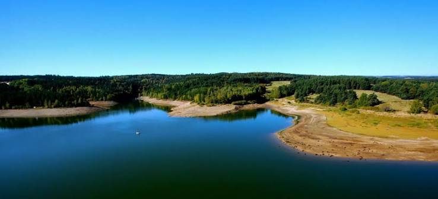

Installée à l'extrême nord-est de la Lozère, à la lisière du Velay et de la Margeride, Langogne occupe depuis toujours une position de carrefour entre deux mondes, celui du Gévaudan occitan et celui de l'Auvergne voisine. L'histoire de la ville remonte à la toute fin du Xe siècle : en 998, le vicomte de Gévaudan Étienne et son épouse Angelmode font édifier une première église, achevée en 999, dont ils confient la charge aux bénédictins de la puissante abbaye de Saint-Chaffre du Monastier-en-Velay.

L'église abbatiale, cœur historique du vieux Langogne
Ce prieuré bénédictin donne naissance au « vieux Langogne », noyau originel enclavé dans le centre-ville actuel, organisé autour de son église abbatiale et protégé par une enceinte de remparts dont subsistent encore quelques vestiges. Ville frontalière entre Gévaudan et Velay, Langogne a longtemps vécu de ses foires et de son artisanat lainier, tirant profit de sa position de passage entre les hauts plateaux volcaniques de l'Auvergne et les contreforts des Cévennes.
Le XXe siècle transforme profondément le visage de la commune avec la construction, entre 1976 et 1982, du barrage de Naussac sur un affluent de l'Allier. Le nouveau lac, le plus vaste de Lozère, submerge l'ancien village de Naussac et redessine tout le paysage aux portes de Langogne, ouvrant la voie à un tourisme nautique aujourd'hui florissant, sans effacer pour autant le charme discret du vieux bourg médiéval.
⛪
Visite pratique

Le lac de Naussac, le plus vaste plan d'eau de Lozère
⏱️
Durée
Environ 1h à 1h30 de visite du centre historique
📊
Difficulté
Facile, vieille ville de plan resserré
🚗
Accès
Extrême nord-est de la Lozère, frontière Occitanie / Auvergne-Rhône-Alpes
🎟️
Tarif
Ville en accès libre, musée municipal à tarif réduit
✦ Infos pratiques
Église abbatiale Édifice roman des XIe-XIIe siècles, trésor d'art religieux et orgue classé de 1518
Château abbatial Bâtiment du XIVe siècle abritant aujourd'hui le musée municipal
Église Saint-Jean-Baptiste Second édifice religieux du centre historique
Vestiges des remparts médiévaux Traces de l'ancienne enceinte protégeant le vieux Langogne
Ancien couvent des Ursulines Témoin de la présence religieuse féminine dans la ville d'autrefois
Lac de Naussac Plus grand plan d'eau de Lozère, activités nautiques et sentier du tour du lac (14 km)
Chemin de Stevenson (GR70) et voies de Compostelle Langogne se situe au croisement de plusieurs itinéraires de grande randonnée reliant le Velay aux Cévennes
Marché Tous les jeudis matin, dans le centre-ville historique
1
L'église abbatiale
Fondée à la toute fin du Xe siècle par les bénédictins de Saint-Chaffre, elle conserve un remarquable trésor d'art religieux ainsi qu'un orgue classé datant de 1518.
2
Le château abbatial et le musée municipal
Édifice du XIVe siècle qui abritait autrefois les moines administrateurs du prieuré, aujourd'hui reconverti en musée consacré à l'histoire locale.
3
Le vieux Langogne
Un noyau médiéval enclavé au cœur de la ville moderne, avec ses maisons nobles, ses vestiges de remparts et son ancien couvent des Ursulines.
4
Le lac de Naussac
À quelques minutes du centre, le plus vaste plan d'eau de Lozère offre voile, paddle et baignade sur plus de mille hectares d'eau turquoise.
5
Le tour du lac et les Monts du Velay
Une balade de 14 km balisée autour du lac, offrant au coucher du soleil un panorama saisissant sur les Monts du Velay.
🏆
Reconnaissance & patrimoine
🎼
Orgue classé de 1518
L'église abbatiale de Langogne conserve un orgue historique parmi les plus anciens de la région, témoin de la richesse du trésor religieux du prieuré.
Orgue de 1518
🏛️
Fondation bénédictine millénaire
Le prieuré fondé en 998-999 par le vicomte Étienne de Gévaudan et confié à l'abbaye de Saint-Chaffre du Monastier-en-Velay compte parmi les plus anciennes fondations religieuses du Gévaudan.
Depuis 998
🚶
Carrefour de chemins de grande randonnée
Langogne se situe au croisement d'itinéraires reliant historiquement le Velay, l'Auvergne et les Cévennes, aujourd'hui parcourus par de nombreux marcheurs.
GR70 / GR700
🌊
Plus grand lac de Lozère
Le lac de Naussac, avec plus de mille hectares, constitue le plus vaste plan d'eau du département et un site touristique majeur du nord Lozère.
+1000 ha
🌊
Naussac, le village englouti par les eaux
Entre 1976 et 1982, la construction du barrage de Naussac sur un affluent de l'Allier bouleverse le destin d'un village entier. Malgré plusieurs années de résistance de ses habitants, le vieux Naussac est progressivement recouvert par les eaux en 1983, donnant naissance au plus vaste lac de Lozère. Les Naussacois sont relogés en quasi-totalité dans un nouveau village construit sur une enclave cédée par la commune de Langogne, tandis que l'ancien bourg repose désormais sous plus de mille hectares d'eau.
Le lac a recouvert notre village, mais pas notre mémoire.
— Souvenir populaire des anciens habitants de Naussac
Ce que la construction du barrage a effacé du paysage, le tourisme nautique l'a peu à peu réinventé : plages surveillées, voile, canoë-kayak et pêche animent aujourd'hui les rives d'un lac né d'un sacrifice collectif, devenu l'un des atouts touristiques majeurs du nord de la Lozère, à michemin entre mémoire et renouveau.
💬
Le saviez-vous ? Anecdotes
🌊
Un village entier sous les eaux
L'ancien village de Naussac repose aujourd'hui sous le lac qui porte son nom, après la mise en eau du barrage en 1983, au terme de plusieurs années de résistance de ses habitants.
🎼
Un orgue vieux de cinq siècles
L'orgue de l'église abbatiale, daté de 1518, compte parmi les instruments historiques les plus anciens conservés dans les édifices religieux de Lozère.
⛰️
Une ville à cheval sur deux régions
Langogne se situe à l'extrême frontière entre l'Occitanie et l'Auvergne-Rhône-Alpes, un carrefour culturel entre Gévaudan et Velay depuis plus de mille ans.
🐑
Foires et laine, un artisanat de frontière
Comme d'autres cités du Gévaudan, Langogne doit une part de sa prospérité passée aux foires et à l'industrie lainière, favorisées par sa position de carrefour commercial.
📍
Aux alentours
Le lac de Naussac Plus vaste plan d'eau de Lozère, activités nautiques et sentier de randonnée autour du lac.
Le Puy-en-Velay Cité classée au patrimoine mondial de l'UNESCO, à environ 45 minutes.
Gorges du Chapeauroux Vallée sauvage d'un affluent de l'Allier, accessible depuis le village d'Auroux.
Pradelles Village de caractère de Haute-Loire, à quelques kilomètres au nord.
Mont Lozère et Margeride Massifs granitiques et forestiers s'étendant au sud de la ville.
Chemin de Stevenson (GR70) Itinéraire mythique traversant la région entre Velay et Cévennes.